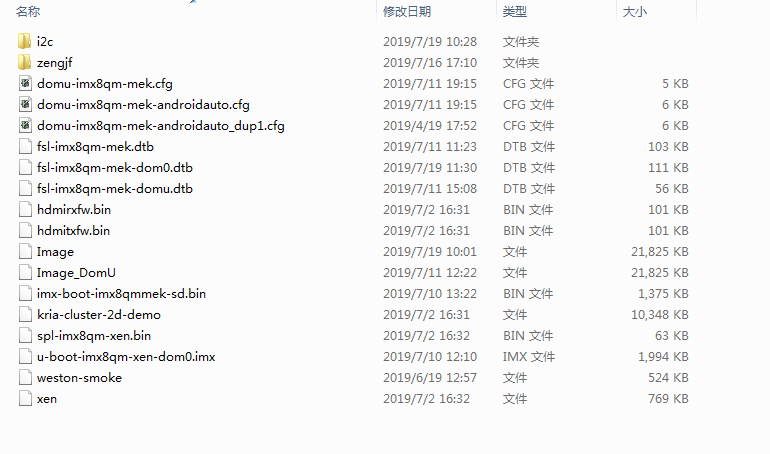

boot.img
boot.img合成原理
参考文档
boot partition

mcopy
where is mcopy
zengjf@UbuntuServer:imx8-build-wayland$ find * -iname mcopy tmp/work/x86_64-linux/mtools-native/4.0.18-r0/image/home/zengjf/imx8-yocto-ga/imx8-build-wayland/tmp/work/x86_64-linux/mtools-native/4.0.18-r0/recipe-sysroot-native/usr/bin/mcopy tmp/work/x86_64-linux/mtools-native/4.0.18-r0/build/mcopy tmp/work/x86_64-linux/mtools-native/4.0.18-r0/sysroot-destdir/home/zengjf/imx8-yocto-ga/imx8-build-wayland/tmp/work/x86_64-linux/mtools-native/4.0.18-r0/recipe-sysroot-native/usr/bin/mcopy ^C
mcopy help
Mtools version 4.0.18, dated January 9th, 2013 Usage: ./mcopy [-spatnmQVBT] [-D clash_option] sourcefile targetfile ./mcopy [-spatnmQVBT] [-D clash_option] sourcefile [sourcefiles...] targetdirectory
mcopy -icode: https://github.com/Distrotech/mtools/blob/master/mcopy.c#L533void set_cmd_line_image(char *img, int flags);
recipes依赖关系
bitbake linux-imx -c deploy -DD -f[...省略] DEBUG: Parsing /home/zengjf/imx8-yocto-ga/sources/meta-fsl-bsp-release/imx/meta-bsp/recipes-kernel/linux/linux-imx_4.14.78.bb (full) DEBUG: CONF /home/zengjf/imx8-yocto-ga/sources/meta-fsl-bsp-release/imx/meta-bsp/recipes-kernel/linux/linux-imx_4.14.78.bb:5: including recipes-kernel/linux/linux-imx.inc DEBUG: Inheriting /home/zengjf/imx8-yocto-ga/sources/poky/meta/classes/kernel.bbclass (from /home/zengjf/imx8-yocto-ga/sources/meta-freescale/recipes-kernel/linux/linux-imx.inc:7) DEBUG: Inheriting /home/zengjf/imx8-yocto-ga/sources/poky/meta/classes/linux-kernel-base.bbclass (from /home/zengjf/imx8-yocto-ga/sources/poky/meta/classes/kernel.bbclass:1) DEBUG: Inheriting /home/zengjf/imx8-yocto-ga/sources/poky/meta/classes/kernel-module-split.bbclass (from /home/zengjf/imx8-yocto-ga/sources/poky/meta/classes/kernel.bbclass:1) DEBUG: Inheriting /home/zengjf/imx8-yocto-ga/sources/poky/meta/classes/kernel-uimage.bbclass (from /home/zengjf/imx8-yocto-ga/sources/poky/meta/classes/kernel.bbclass:120) DEBUG: Inheriting /home/zengjf/imx8-yocto-ga/sources/poky/meta/classes/kernel-uboot.bbclass (from /home/zengjf/imx8-yocto-ga/sources/poky/meta/classes/kernel-uimage.bbclass:1) DEBUG: Inheriting /home/zengjf/imx8-yocto-ga/sources/poky/meta/classes/kernel-arch.bbclass (from /home/zengjf/imx8-yocto-ga/sources/poky/meta/classes/kernel.bbclass:146) DEBUG: Inheriting /home/zengjf/imx8-yocto-ga/sources/poky/meta/classes/deploy.bbclass (from /home/zengjf/imx8-yocto-ga/sources/poky/meta/classes/kernel.bbclass:146) DEBUG: Inheriting /home/zengjf/imx8-yocto-ga/sources/poky/meta/classes/cml1.bbclass (from /home/zengjf/imx8-yocto-ga/sources/poky/meta/classes/kernel.bbclass:535) DEBUG: Inheriting /home/zengjf/imx8-yocto-ga/sources/poky/meta/classes/kernel-devicetree.bbclass (from /home/zengjf/imx8-yocto-ga/sources/poky/meta/classes/kernel.bbclass:713) DEBUG: Inheriting /home/zengjf/imx8-yocto-ga/sources/meta-freescale/classes/fsl-kernel-localversion.bbclass (from /home/zengjf/imx8-yocto-ga/sources/meta-freescale/recipes-kernel/linux/linux-imx.inc:7) DEBUG: Inheriting /home/zengjf/imx8-yocto-ga/sources/meta-freescale/classes/fsl-vivante-kernel-driver-handler.bbclass (from /home/zengjf/imx8-yocto-ga/sources/meta-freescale/recipes-kernel/linux/linux-imx.inc:7) DEBUG: CONF /home/zengjf/imx8-yocto-ga/sources/meta-fsl-bsp-release/imx/meta-bsp/recipes-kernel/linux/linux-imx_4.14.78.bb:6: including recipes-kernel/linux/linux-imx-src-4.14.78.inc DEBUG: Use 'imx8qmmek' as package architecture for 'linux-imx' [...省略]
代码分析
meta-fsl-bsp-release/imx/meta-bsp/classes/image_types_fsl.bbclass_generate_boot_image() { local boot_part=$1 # Create boot partition image BOOT_BLOCKS=$(LC_ALL=C parted -s ${SDCARD} unit b print \ | awk "/ $boot_part / { print substr(\$4, 1, length(\$4 -1)) / 1024 }") # mkdosfs will sometimes use FAT16 when it is not appropriate, # resulting in a boot failure from SYSLINUX. Use FAT32 for # images larger than 512MB, otherwise let mkdosfs decide. if [ $(expr $BOOT_BLOCKS / 1024) -gt 512 ]; then FATSIZE="-F 32" fi rm -f ${WORKDIR}/boot.img mkfs.vfat -n "${BOOTDD_VOLUME_ID}" -S 512 ${FATSIZE} -C ${WORKDIR}/boot.img $BOOT_BLOCKS mcopy -i ${WORKDIR}/boot.img -s ${DEPLOY_DIR_IMAGE}/${KERNEL_IMAGETYPE}-${MACHINE}.bin ::/${KERNEL_IMAGETYPE} # Copy boot scripts for item in ${BOOT_SCRIPTS}; do src=`echo $item | awk -F':' '{ print $1 }'` dst=`echo $item | awk -F':' '{ print $2 }'` mcopy -i ${WORKDIR}/boot.img -s ${DEPLOY_DIR_IMAGE}/$src ::/$dst done # Copy device tree file if test -n "${KERNEL_DEVICETREE}"; then for DTS_FILE in ${KERNEL_DEVICETREE}; do DTS_BASE_NAME=`basename ${DTS_FILE} | awk -F "." '{print $1}'` if [ -e "${DEPLOY_DIR_IMAGE}/${KERNEL_IMAGETYPE}-${DTS_BASE_NAME}.dtb" ]; then kernel_bin="`readlink ${DEPLOY_DIR_IMAGE}/${KERNEL_IMAGETYPE}-${MACHINE}.bin`" kernel_bin_for_dtb="`readlink ${DEPLOY_DIR_IMAGE}/${KERNEL_IMAGETYPE}-${DTS_BASE_NAME}.dtb | sed "s,$DTS_BASE_NAME,${MACHINE},g;s,\.dtb$,.bin,g"`" if [ $kernel_bin = $kernel_bin_for_dtb ]; then mcopy -i ${WORKDIR}/boot.img -s ${DEPLOY_DIR_IMAGE}/${KERNEL_IMAGETYPE}-${DTS_BASE_NAME}.dtb ::/${DTS_BASE_NAME}.dtb fi else bbfatal "${DTS_FILE} does not exist." fi done fi # Copy extlinux.conf to images that have U-Boot Extlinux support. if [ "${UBOOT_EXTLINUX}" = "1" ]; then mmd -i ${WORKDIR}/boot.img ::/extlinux mcopy -i ${WORKDIR}/boot.img -s ${DEPLOY_DIR_IMAGE}/extlinux.conf ::/extlinux/extlinux.conf fi # Copy additional files to boot partition: such as m4 images and firmwares if [ -n "${IMAGE_BOOTFILES}" ]; then for IMAGE_FILE in ${IMAGE_BOOTFILES}; do if [ -e "${DEPLOY_DIR_IMAGE}/${IMAGE_FILE}" ]; then mcopy -i ${WORKDIR}/boot.img -s ${DEPLOY_DIR_IMAGE}/${IMAGE_FILE} ::/${IMAGE_FILE} else bbfatal "${IMAGE_FILE} does not exist." fi done fi # add tee to boot image if ${@bb.utils.contains('COMBINED_FEATURES', 'optee', 'true', 'false', d)}; then for UTEE_FILE_PATH in `find ${DEPLOY_DIR_IMAGE} -maxdepth 1 -type f -name 'uTee-*' -print -quit`; do UTEE_FILE=`basename ${UTEE_FILE_PATH}` mcopy -i ${WORKDIR}/boot.img -s ${DEPLOY_DIR_IMAGE}/${UTEE_FILE} ::/${UTEE_FILE} done fi }run time code:
tmp/work/imx8qmmek-poky-linux/fsl-image-qt5-validation-imx/1.0-r0/temp/run.do_image_sdcard_generate_boot_image() { local boot_part=$1 # Create boot partition image BOOT_BLOCKS=$(LC_ALL=C parted -s /home/zengjf/imx8-yocto-ga/imx8-build-wayland/tmp/work/imx8qmmek-poky-linux/fsl-image-qt5-validation-imx/1.0-r0/deploy-fsl-image-qt5-validation-imx-image-complete/fsl-image-qt5-validation-imx-imx8qmmek-20190725051445.rootfs.sdcard unit b print \ | awk "/ $boot_part / { print substr(\$4, 1, length(\$4 -1)) / 1024 }") # mkdosfs will sometimes use FAT16 when it is not appropriate, # resulting in a boot failure from SYSLINUX. Use FAT32 for # images larger than 512MB, otherwise let mkdosfs decide. if [ $(expr $BOOT_BLOCKS / 1024) -gt 512 ]; then FATSIZE="-F 32" fi rm -f /home/zengjf/imx8-yocto-ga/imx8-build-wayland/tmp/work/imx8qmmek-poky-linux/fsl-image-qt5-validation-imx/1.0-r0/boot.img mkfs.vfat -n "Boot imx8qmmek" -S 512 ${FATSIZE} -C /home/zengjf/imx8-yocto-ga/imx8-build-wayland/tmp/work/imx8qmmek-poky-linux/fsl-image-qt5-validation-imx/1.0-r0/boot.img $BOOT_BLOCKS mcopy -i /home/zengjf/imx8-yocto-ga/imx8-build-wayland/tmp/work/imx8qmmek-poky-linux/fsl-image-qt5-validation-imx/1.0-r0/boot.img -s /home/zengjf/imx8-yocto-ga/imx8-build-wayland/tmp/deploy/images/imx8qmmek/Image-imx8qmmek.bin ::/Image # Copy boot scripts for item in ${BOOT_SCRIPTS}; do src=`echo $item | awk -F':' '{ print $1 }'` dst=`echo $item | awk -F':' '{ print $2 }'` mcopy -i /home/zengjf/imx8-yocto-ga/imx8-build-wayland/tmp/work/imx8qmmek-poky-linux/fsl-image-qt5-validation-imx/1.0-r0/boot.img -s /home/zengjf/imx8-yocto-ga/imx8-build-wayland/tmp/deploy/images/imx8qmmek/$src ::/$dst done # Copy device tree file if test -n "freescale/fsl-imx8qm-mek.dtb freescale/fsl-imx8qm-mek_ca53.dtb freescale/fsl-imx8qm-mek_ca72.dtb freescale/fsl-imx8qm-mek-8cam.dtb freescale/fsl-imx8qm-mek-hdmi.dtb freescale/fsl-imx8qm-mek-jdi-wuxga-lvds1-panel.dtb freescale/fsl-imx8qm-mek-dsi-rm67191.dtb freescale/fsl-imx8qm-mek-mipi-ov5640.dtb freescale/fsl-imx8qm-mek-mipi-two-ov5640.dtb freescale/fsl-imx8qm-mek-enet2-tja1100.dtb freescale/fsl-imx8qm-mek-inmate.dtb freescale/fsl-imx8qm-mek-dom0.dtb freescale/fsl-imx8qm-mek-domu.dtb freescale/fsl-imx8qm-mek-domu-car.dtb freescale/fsl-imx8qm-mek-domu-dpu1.dtb freescale/fsl-imx8qm-mek-dom0-dpu2.dtb freescale/fsl-imx8qm-mek-domu-dpu1-hdmi.dtb freescale/fsl-imx8qm-mek-root.dtb freescale/fsl-imx8qm-mek-hdmi-in.dtb freescale/fsl-imx8qm-mek-m4.dtb"; then for DTS_FILE in freescale/fsl-imx8qm-mek.dtb freescale/fsl-imx8qm-mek_ca53.dtb freescale/fsl-imx8qm-mek_ca72.dtb freescale/fsl-imx8qm-mek-8cam.dtb freescale/fsl-imx8qm-mek-hdmi.dtb freescale/fsl-imx8qm-mek-jdi-wuxga-lvds1-panel.dtb freescale/fsl-imx8qm-mek-dsi-rm67191.dtb freescale/fsl-imx8qm-mek-mipi-ov5640.dtb freescale/fsl-imx8qm-mek-mipi-two-ov5640.dtb freescale/fsl-imx8qm-mek-enet2-tja1100.dtb freescale/fsl-imx8qm-mek-inmate.dtb freescale/fsl-imx8qm-mek-dom0.dtb freescale/fsl-imx8qm-mek-domu.dtb freescale/fsl-imx8qm-mek-domu-car.dtb freescale/fsl-imx8qm-mek-domu-dpu1.dtb freescale/fsl-imx8qm-mek-dom0-dpu2.dtb freescale/fsl-imx8qm-mek-domu-dpu1-hdmi.dtb freescale/fsl-imx8qm-mek-root.dtb freescale/fsl-imx8qm-mek-hdmi-in.dtb freescale/fsl-imx8qm-mek-m4.dtb; do DTS_BASE_NAME=`basename ${DTS_FILE} | awk -F "." '{print $1}'` if [ -e "/home/zengjf/imx8-yocto-ga/imx8-build-wayland/tmp/deploy/images/imx8qmmek/Image-${DTS_BASE_NAME}.dtb" ]; then kernel_bin="`readlink /home/zengjf/imx8-yocto-ga/imx8-build-wayland/tmp/deploy/images/imx8qmmek/Image-imx8qmmek.bin`" kernel_bin_for_dtb="`readlink /home/zengjf/imx8-yocto-ga/imx8-build-wayland/tmp/deploy/images/imx8qmmek/Image-${DTS_BASE_NAME}.dtb | sed "s,$DTS_BASE_NAME,imx8qmmek,g;s,\.dtb$,.bin,g"`" if [ $kernel_bin = $kernel_bin_for_dtb ]; then mcopy -i /home/zengjf/imx8-yocto-ga/imx8-build-wayland/tmp/work/imx8qmmek-poky-linux/fsl-image-qt5-validation-imx/1.0-r0/boot.img -s /home/zengjf/imx8-yocto-ga/imx8-build-wayland/tmp/deploy/images/imx8qmmek/Image-${DTS_BASE_NAME}.dtb ::/${DTS_BASE_NAME}.dtb fi else bbfatal "${DTS_FILE} does not exist." fi done fi # Copy extlinux.conf to images that have U-Boot Extlinux support. if [ "${UBOOT_EXTLINUX}" = "1" ]; then mmd -i /home/zengjf/imx8-yocto-ga/imx8-build-wayland/tmp/work/imx8qmmek-poky-linux/fsl-image-qt5-validation-imx/1.0-r0/boot.img ::/extlinux mcopy -i /home/zengjf/imx8-yocto-ga/imx8-build-wayland/tmp/work/imx8qmmek-poky-linux/fsl-image-qt5-validation-imx/1.0-r0/boot.img -s /home/zengjf/imx8-yocto-ga/imx8-build-wayland/tmp/deploy/images/imx8qmmek/extlinux.conf ::/extlinux/extlinux.conf fi # Copy additional files to boot partition: such as m4 images and firmwares if [ -n " hdmitxfw.bin hdmirxfw.bin dpfw.bin xen" ]; then for IMAGE_FILE in hdmitxfw.bin hdmirxfw.bin dpfw.bin xen; do if [ -e "/home/zengjf/imx8-yocto-ga/imx8-build-wayland/tmp/deploy/images/imx8qmmek/${IMAGE_FILE}" ]; then mcopy -i /home/zengjf/imx8-yocto-ga/imx8-build-wayland/tmp/work/imx8qmmek-poky-linux/fsl-image-qt5-validation-imx/1.0-r0/boot.img -s /home/zengjf/imx8-yocto-ga/imx8-build-wayland/tmp/deploy/images/imx8qmmek/${IMAGE_FILE} ::/${IMAGE_FILE} else bbfatal "${IMAGE_FILE} does not exist." fi done fi # add tee to boot image if false; then for UTEE_FILE_PATH in `find /home/zengjf/imx8-yocto-ga/imx8-build-wayland/tmp/deploy/images/imx8qmmek -maxdepth 1 -type f -name 'uTee-*' -print -quit`; do UTEE_FILE=`basename ${UTEE_FILE_PATH}` mcopy -i /home/zengjf/imx8-yocto-ga/imx8-build-wayland/tmp/work/imx8qmmek-poky-linux/fsl-image-qt5-validation-imx/1.0-r0/boot.img -s /home/zengjf/imx8-yocto-ga/imx8-build-wayland/tmp/deploy/images/imx8qmmek/${UTEE_FILE} ::/${UTEE_FILE} done fi }
Kernel 编译代码分析
bitbake fsl-image-qt5-validation-imx -gcat recipe-depends.dot | grep linux | grep kernel"cryptodev-linux" [label="cryptodev-linux\n:1.9-r0\n/home/zengjf/imx8-yocto-ga/sources/poky/meta/recipes-kernel/cryptodev/cryptodev-linux_1.9.bb"] "kernel-module-imx-gpu-viv" -> "linux-imx" "kernel-module-imx-gpu-viv" -> "linux-libc-headers" "kernel-module-qca6174" -> "linux-imx" "kernel-module-qca6174" -> "linux-libc-headers" "linux-imx" [label="linux-imx\n:4.14.78-r0\n/home/zengjf/imx8-yocto-ga/sources/meta-fsl-bsp-release/imx/meta-bsp/recipes-kernel/linux/linux-imx_4.14.78.bb"] "linux-libc-headers" [label="linux-libc-headers\n:4.14-r0\n/home/zengjf/imx8-yocto-ga/sources/meta-fsl-bsp-release/imx/meta-bsp/recipes-kernel/linux-libc-headers/linux-libc-headers_4.14.bb"]
meta-fsl-bsp-release/imx/meta-bsp/recipes-kernel/linux/linux-imx_4.14.78.bb# Copyright (C) 2013-2016 Freescale Semiconductor # Copyright 2017-2018 NXP # Released under the MIT license (see COPYING.MIT for the terms) require recipes-kernel/linux/linux-imx.inc require recipes-kernel/linux/linux-imx-src-${PV}.inc SUMMARY = "Linux Kernel provided and supported by NXP" DESCRIPTION = "Linux Kernel provided and supported by NXP with focus on \ i.MX Family Reference Boards. It includes support for many IPs such as GPU, VPU and IPU." DEPENDS += "lzop-native bc-native" [...省略]meta-freescale/recipes-kernel/linux/linux-imx.inc
# Copyright (C) 2012, 2015 O.S. Systems Software LTDA. # Released under the MIT license (see COPYING.MIT for the terms) LICENSE = "GPLv2" LIC_FILES_CHKSUM = "file://COPYING;md5=d7810fab7487fb0aad327b76f1be7cd7" inherit kernel fsl-kernel-localversion fsl-vivante-kernel-driver-handler # Put a local version until we have a true SRCREV to point to LOCALVERSION ?= "" SCMVERSION ?= "y" SRCBRANCH ?= "" [...省略]
poky/meta/classes/kernel.bbclass[...省略] do_deploy[cleandirs] = "${DEPLOYDIR}" do_deploy[dirs] = "${DEPLOYDIR} ${B}" do_deploy[prefuncs] += "package_get_auto_pr" addtask deploy after do_populate_sysroot do_packagedata EXPORT_FUNCTIONS do_deploy # Add using Device Tree support inherit kernel-devicetree
poky/meta/classes/kernel-devicetree.bbclassdo_deploy_append() { for DTB in ${KERNEL_DEVICETREE}; do DTB=`normalize_dtb "${DTB}"` DTB_EXT=${DTB##*.} DTB_BASE_NAME=`basename ${DTB} ."${DTB_EXT}"` for type in ${KERNEL_IMAGETYPE_FOR_MAKE}; do base_name=${type}"-"${KERNEL_IMAGE_BASE_NAME} symlink_name=${type}"-"${KERNEL_IMAGE_SYMLINK_NAME} DTB_NAME=`echo ${base_name} | sed "s/${MACHINE}/${DTB_BASE_NAME}/g"` DTB_SYMLINK_NAME=`echo ${symlink_name} | sed "s/${MACHINE}/${DTB_BASE_NAME}/g"` DTB_PATH=`get_real_dtb_path_in_kernel "${DTB}"` install -d ${DEPLOYDIR} install -m 0644 ${DTB_PATH} ${DEPLOYDIR}/${DTB_NAME}.${DTB_EXT} ln -sf ${DTB_NAME}.${DTB_EXT} ${DEPLOYDIR}/${DTB_SYMLINK_NAME}.${DTB_EXT} ln -sf ${DTB_NAME}.${DTB_EXT} ${DEPLOYDIR}/${DTB_BASE_NAME}.${DTB_EXT} if [ "$type" = "zImage" ] && [ "${KERNEL_DEVICETREE_BUNDLE}" = "1" ]; then cat ${DEPLOYDIR}/$type \ ${DEPLOYDIR}/${DTB_NAME}.${DTB_EXT} \ > ${DEPLOYDIR}/${DTB_NAME}.${DTB_EXT}.bin ln -sf ${DTB_NAME}.${DTB_EXT}.bin ${DEPLOYDIR}/$type-${DTB_BASE_NAME}.${DTB_EXT}.bin if [ -e "${KERNEL_OUTPUT_DIR}/${type}.initramfs" ]; then cat ${KERNEL_OUTPUT_DIR}/${type}.initramfs \ ${DEPLOYDIR}/${DTB_NAME}.${DTB_EXT} \ > ${DEPLOYDIR}/${type}-${INITRAMFS_BASE_NAME}-${DTB_BASE_NAME}.${DTB_EXT}.bin ln -sf ${type}-${INITRAMFS_BASE_NAME}-${DTB_BASE_NAME}.${DTB_EXT}.bin \ ${DEPLOYDIR}/${type}-initramfs-${DTB_BASE_NAME}.${DTB_EXT}-${MACHINE}.bin fi fi done done }ls -al tmp/work/imx8qmmek-poky-linux/linux-imx/4.14.78-r0total 640 drwxrwxr-x 15 zengjf zengjf 4096 Mar 5 15:32 . drwxrwxr-x 3 zengjf zengjf 4096 Jan 3 2019 .. -rw-rw-r-- 1 zengjf zengjf 619 Jan 3 2019 0001-uapi-Add-ion.h-to-userspace.patch drwxr-xr-x 22 zengjf zengjf 4096 Jan 23 2019 build -rw-r--r-- 1 zengjf zengjf 19223 Jan 3 2019 defconfig drwxr-xr-x 2 zengjf zengjf 4096 Jan 23 2019 deploy-linux-imx drwxr-xr-x 3 zengjf zengjf 4096 Jan 23 2019 deploy-rpms lrwxrwxrwx 1 zengjf zengjf 83 Jan 3 2019 git -> /home/zengjf/imx8-yocto-ga/imx8-build-wayland/tmp/work-shared/imx8qmmek/kernel-source drwxr-xr-x 5 zengjf zengjf 4096 Jan 23 2019 image drwxrwxr-x 3 zengjf zengjf 4096 Jan 5 2019 license-destdir -rw-r--r-- 1 zengjf zengjf 519018 Jan 23 2019 linux-imx.spec drwxr-xr-x 4 zengjf zengjf 4096 Jan 23 2019 package drwxr-xr-x 304 zengjf zengjf 28672 Jan 23 2019 packages-split drwxr-xr-x 7 zengjf zengjf 4096 Jan 23 2019 pkgdata drwxrwxr-x 2 zengjf zengjf 4096 Jan 23 2019 pseudo drwxrwxr-x 5 zengjf zengjf 4096 Jan 23 2019 recipe-sysroot drwxrwxr-x 10 zengjf zengjf 4096 Jan 4 2019 recipe-sysroot-native drwxr-xr-x 3 zengjf zengjf 4096 Jan 23 2019 sysroot-destdir drwxrwxr-x 2 zengjf zengjf 20480 Jul 26 12:10 temp
tmp/work/imx8qmmek-poky-linux/linux-imx/4.14.78-r0/temp/run.do_deploy[...省略] do_deploy() { # 暂时没找到这个是怎么包含下面的代码的 kernel_do_deploy for DTB in freescale/fsl-imx8qm-mek.dtb freescale/fsl-imx8qm-mek_ca53.dtb freescale/fsl-imx8qm-mek_ca72.dtb freescale/fsl-imx8qm-mek-8cam.dtb freescale/fsl-imx8qm-mek-hdmi.dtb freescale/fsl-imx8qm-mek-jdi-wuxga-lvds1-panel.dtb freescale/fsl-imx8qm-mek-dsi-rm67191.dtb freescale/fsl-imx8qm-mek-mipi-ov5640.dtb freescale/fsl-imx8qm-mek-mipi-two-ov5640.dtb freescale/fsl-imx8qm-mek-enet2-tja1100.dtb freescale/fsl-imx8qm-mek-inmate.dtb freescale/fsl-imx8qm-mek-dom0.dtb freescale/fsl-imx8qm-mek-domu.dtb freescale/fsl-imx8qm-mek-domu-car.dtb freescale/fsl-imx8qm-mek-domu-dpu1.dtb freescale/fsl-imx8qm-mek-dom0-dpu2.dtb freescale/fsl-imx8qm-mek-domu-dpu1-hdmi.dtb freescale/fsl-imx8qm-mek-root.dtb freescale/fsl-imx8qm-mek-hdmi-in.dtb freescale/fsl-imx8qm-mek-m4.dtb; do DTB=`normalize_dtb "${DTB}"` DTB_EXT=${DTB##*.} DTB_BASE_NAME=`basename ${DTB} ."${DTB_EXT}"` for type in Image; do base_name=${type}"-"-4.14.78-r0-imx8qmmek-20190123120805 symlink_name=${type}"-"imx8qmmek DTB_NAME=`echo ${base_name} | sed "s/imx8qmmek/${DTB_BASE_NAME}/g"` DTB_SYMLINK_NAME=`echo ${symlink_name} | sed "s/imx8qmmek/${DTB_BASE_NAME}/g"` DTB_PATH=`get_real_dtb_path_in_kernel "${DTB}"` install -d /home/zengjf/imx8-yocto-ga/imx8-build-wayland/tmp/work/imx8qmmek-poky-linux/linux-imx/4.14.78-r0/deploy-linux-imx install -m 0644 ${DTB_PATH} /home/zengjf/imx8-yocto-ga/imx8-build-wayland/tmp/work/imx8qmmek-poky-linux/linux-imx/4.14.78-r0/deploy-linux-imx/${DTB_NAME}.${DTB_EXT} ln -sf ${DTB_NAME}.${DTB_EXT} /home/zengjf/imx8-yocto-ga/imx8-build-wayland/tmp/work/imx8qmmek-poky-linux/linux-imx/4.14.78-r0/deploy-linux-imx/${DTB_SYMLINK_NAME}.${DTB_EXT} ln -sf ${DTB_NAME}.${DTB_EXT} /home/zengjf/imx8-yocto-ga/imx8-build-wayland/tmp/work/imx8qmmek-poky-linux/linux-imx/4.14.78-r0/deploy-linux-imx/${DTB_BASE_NAME}.${DTB_EXT} if [ "$type" = "zImage" ] && [ "0" = "1" ]; then cat /home/zengjf/imx8-yocto-ga/imx8-build-wayland/tmp/work/imx8qmmek-poky-linux/linux-imx/4.14.78-r0/deploy-linux-imx/$type \ /home/zengjf/imx8-yocto-ga/imx8-build-wayland/tmp/work/imx8qmmek-poky-linux/linux-imx/4.14.78-r0/deploy-linux-imx/${DTB_NAME}.${DTB_EXT} \ > /home/zengjf/imx8-yocto-ga/imx8-build-wayland/tmp/work/imx8qmmek-poky-linux/linux-imx/4.14.78-r0/deploy-linux-imx/${DTB_NAME}.${DTB_EXT}.bin ln -sf ${DTB_NAME}.${DTB_EXT}.bin /home/zengjf/imx8-yocto-ga/imx8-build-wayland/tmp/work/imx8qmmek-poky-linux/linux-imx/4.14.78-r0/deploy-linux-imx/$type-${DTB_BASE_NAME}.${DTB_EXT}.bin if [ -e "arch/arm64/boot/${type}.initramfs" ]; then cat arch/arm64/boot/${type}.initramfs \ /home/zengjf/imx8-yocto-ga/imx8-build-wayland/tmp/work/imx8qmmek-poky-linux/linux-imx/4.14.78-r0/deploy-linux-imx/${DTB_NAME}.${DTB_EXT} \ > /home/zengjf/imx8-yocto-ga/imx8-build-wayland/tmp/work/imx8qmmek-poky-linux/linux-imx/4.14.78-r0/deploy-linux-imx/${type}-initramfs-4.14.78-r0-imx8qmmek-20190123120805-${DTB_BASE_NAME}.${DTB_EXT}.bin ln -sf ${type}-initramfs-4.14.78-r0-imx8qmmek-20190123120805-${DTB_BASE_NAME}.${DTB_EXT}.bin \ /home/zengjf/imx8-yocto-ga/imx8-build-wayland/tmp/work/imx8qmmek-poky-linux/linux-imx/4.14.78-r0/deploy-linux-imx/${type}-initramfs-${DTB_BASE_NAME}.${DTB_EXT}-imx8qmmek.bin fi fi done done } kernel_do_deploy() { deployDir="/home/zengjf/imx8-yocto-ga/imx8-build-wayland/tmp/work/imx8qmmek-poky-linux/linux-imx/4.14.78-r0/deploy-linux-imx" if [ -n "" ]; then deployDir="/home/zengjf/imx8-yocto-ga/imx8-build-wayland/tmp/work/imx8qmmek-poky-linux/linux-imx/4.14.78-r0/deploy-linux-imx/" mkdir "$deployDir" for type in Image ; do base_name=${type}--4.14.78-r0-imx8qmmek-20190726055721 install -m 0644 arch/arm64/boot/${type} $deployDir/${base_name}.bin // Image转换成带格式的文件 done if [ 1 = "1" ] && (grep -q -i -e '^CONFIG_MODULES=y$' .config); then mkdir -p /home/zengjf/imx8-yocto-ga/imx8-build-wayland/tmp/work/imx8qmmek-poky-linux/linux-imx/4.14.78-r0/image/lib tar -cvzf $deployDir/modules--4.14.78-r0-imx8qmmek-20190726055721.tgz -C /home/zengjf/imx8-yocto-ga/imx8-build-wayland/tmp/work/imx8qmmek-poky-linux/linux-imx/4.14.78-r0/image lib ln -sf modules--4.14.78-r0-imx8qmmek-20190726055721.tgz $deployDir/modules-imx8qmmek.tgz for type in Image ; do base_name=${type}--4.14.78-r0-imx8qmmek-20190726055721 symlink_name=${type}-imx8qmmek ln -sf ${base_name}.bin $deployDir/${symlink_name}.bin // 目标链接生成 ln -sf ${base_name}.bin $deployDir/${type} do cd /home/zengjf/imx8-yocto-ga/imx8-build-wayland/tmp/work/imx8qmmek-poky-linux/linux-imx/4.14.78-r0/build # Update deploy directory for type in Image ; do if [ -e "arch/arm64/boot/${type}.initramfs" ]; then echo "Copying deploy ${type} kernel-initramfs image and setting up links..." initramfs_base_name=${type}-initramfs-4.14.78-r0-imx8qmmek-20190726055721 initramfs_symlink_name=${type}-initramfs-imx8qmmek install -m 0644 arch/arm64/boot/${type}.initramfs $deployDir/${initramfs_base_name}.bin ln -sf ${initramfs_base_name}.bin $deployDir/${initramfs_symlink_name}.bin fi done }ls -al tmp/deploy/images/imx8qmmek/Image-imx8qmmek.binlrwxrwxrwx 2 zengjf zengjf 46 Jul 26 13:57 Image-imx8qmmek.bin -> Image--4.14.78-r0-imx8qmmek-20190726055721.bin
Image--4.14.78-r0-imx8qmmek-20190726055721.bin–>arch/arm64/boot/Image